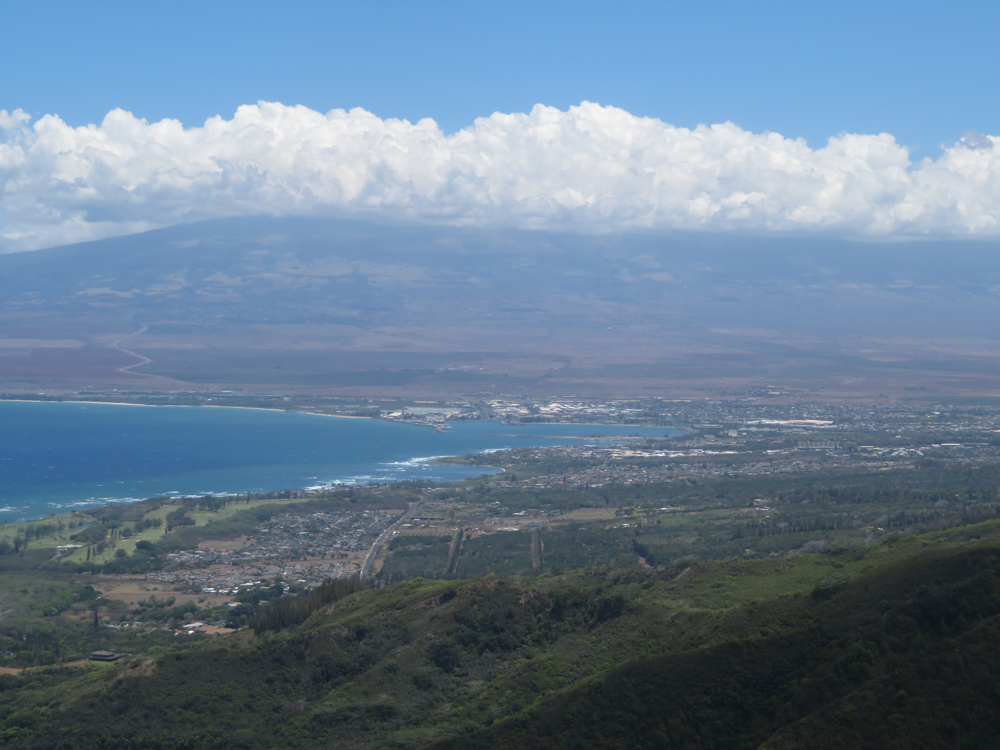
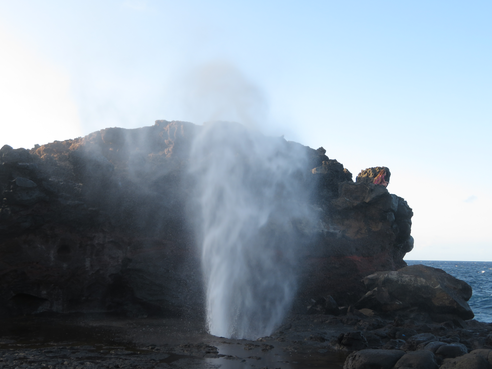
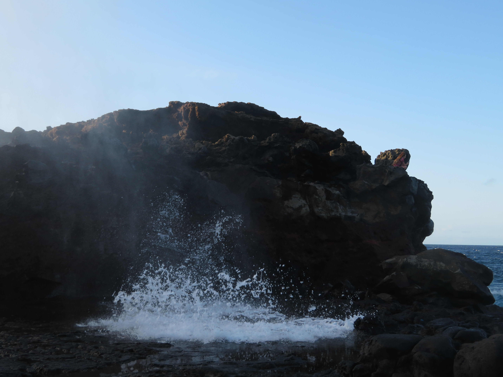
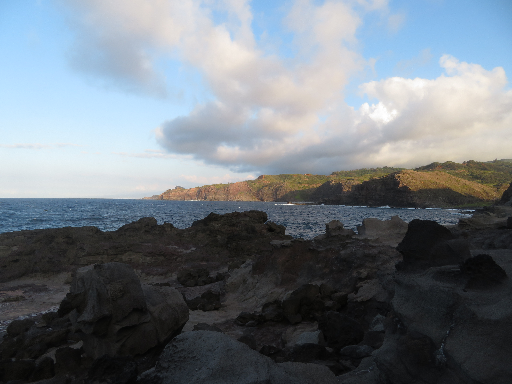

Kahalui & Haleakala

Waihe'e Ridge Trail
The mountains and coast of Western Maui and Northwestern Maui are some of the most remote and overlooked parts of the island. So many cool secret places can be found here, making for the perfect excursion from the other parts of the island.
Kahalui & Haleakala
Waihe'e Ridge Trail
The main hike I did here was the roughly 4 mile Waihe'e Ridge Trail, a stunning excursion that is 100% worth it. Not only do you get views of the emerald green West Maui mountain range itself, the best scenery is that of the town of Kahului and the massive Haleakala Volcano rising above.

West Maui Mountain Range

Northwestern Coast

View of Kahalui and Mt. Haleakala
Besides Waihe'e Ridge, West Maui is also home to some coastal wonders, such as the Nakalele Blowhole and the Olivine Pools, both accessible via a short trail.

Nakalele Blowhole

Nakalele Blowhole

Blowhole View

Olivine Pools

Olivine Pools

Olivine Pools View